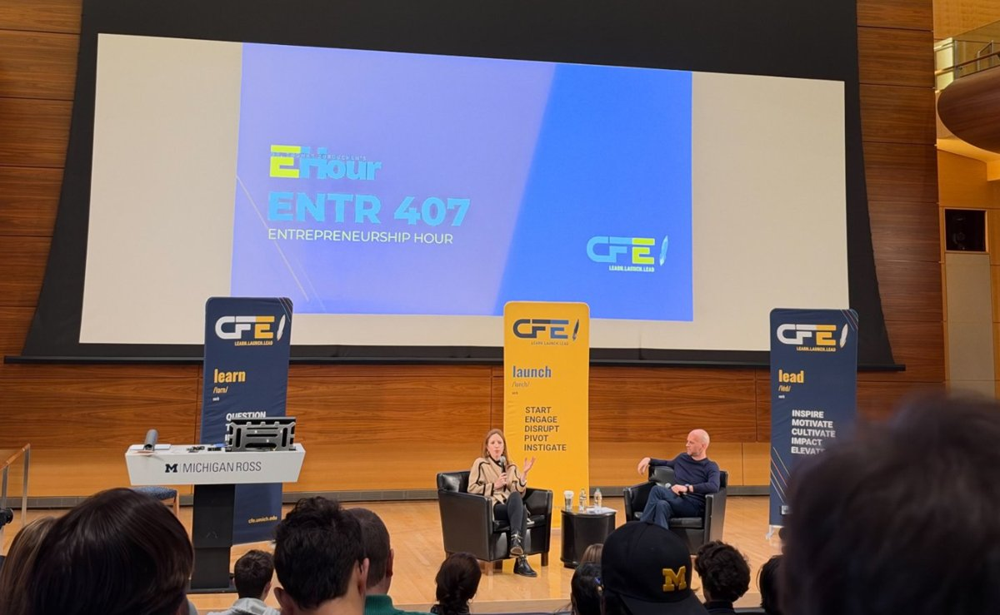

field note · November 2026
Saw it, solved it: five things a unicorn founder taught me
Notes from "Saw It, Solved It: Building a Unicorn," a session of Entrepreneurship Hour (ENTR 407), hosted by U-M's Center for Entrepreneurship at Michigan Ross.

The speaker started as a writer, then built a company worth more than a billion dollars. I expected a talk about speed and luck. Instead, most of it was about humility and habits. Here is what stuck with me, and what I'm doing with it. Tap a lesson to flip it.